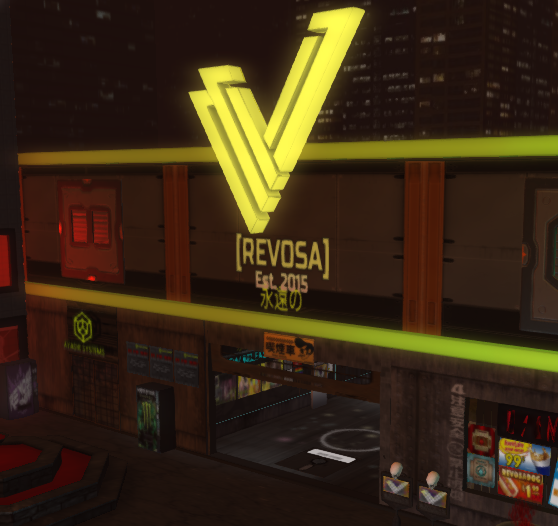

Update 01.21.24
author: cmdr_nova
One day back in late 2014, I had just lost my job. There is a whole entire story behind this with years worth of history connected to it, but for now, and today, this story is about the store I started and still run in Second Life.
But, I lost my job, and prospects of finding a replacement were grim. On top of that, I needed a break. It's unfortunate that said break resulted in me developing a nasty fear of people, and severe anxiety problems (things I've since worked almost all the way through). Nowhere to turn, I was browsing Youtube looking for ways to make money. I had already been active in Second Life since 2012. It was a place I rented a small home from Linden Labs, and hung out with offline friends in virtual apartments watching Spongebob, or hanging out at a local furry club. Times were different for me back then.
I stumbled upon a Youtube video of a woman who had a small family at home, and like me, she'd lost her job. I think she said, in her instance, she had been laid off. With some tenacity, she managed to turn it around by learning how to use Blender, and by applying those skills in Second Life in order to build herself a virtual shoe store. This, as far as I could tell from things detailed in the video, brought her the good fortune of being able to pay her bills and continue like nothing happend. Looking back about 10 years, you could say I was convinced.
Then I saw another video about a couple who'd seemingly up and completely quit their jobs just to be realtors of land in Second Life. I think the story for them is, they eventually made so much money, they stopped doing that as well, and bought a restaurant. And, perusing Second Life myself, there were and still are very many stores that give the impression that they're making some actual cash.
And that settled it. I needed to start making things in Second Life, and by doing so, I would replace my income, and I would work for myself.
If only it were that easy.
But I didn't launch [REVOSA] right off the bat. I had a friend in Second Life that I hung out with daily, and after a break-up, she became someone I spent all of my virtual time with. Through her, I learned a lot of different techniques in using Blender, and how it could be used to make legitimately anything you can imagine. We built up a joint store of sorts together, and we listed products we'd both made, side-by-side. This was in the early days when I still trusted people. When I felt like, at the very least, people close to me could be trusted.
Naivity always gets the best of you.
Luckxe and I had a bit of an online, virtual relationship, you could call it. But it was one that was fleeting, as it usually is in a pretend world where you have access to anyone and everyone on a whim, and people's desires change like I change my socks. One day her and I had a "thing," the next she was with a guy who was very passionate about cars.
And then that was that. But it wasn't just the relationship that went, it was also everything her and I made together. Those things, shaped by both of our hands, all became her's, and her's alone. About 3 or 4 months of working together, gone, and me, back at square one.
This was a problem, as I was definitely not content to give up replacing my income just because I made a bad decision.
So I made the only decision one should make, and that decision was to go into business for myself, by myself, and never, ever invite anyone to partner up again.
[REVOSA] started, literally, in a garage I put up on a small parcel, making paint jobs for people who raced cars, and then, eventually, avatar accessories, system clothing, knick knacks and odd jobs. Eventually, the store grew, and continued to grow. It moved from parcel to parcel, sim to sim, until 2023 when I decided to rent an entire sim, just for myself, and my store. And it stands there today.
Did it ever replace my income? No. No, it just about pays for a couple of World of Warcraft subscriptions per month, and nothing else. A lot of people do say that a store in Second Life needs to be in operation for at least a decade or so before it really gains permanent traction, and I have seen quite a rise in sales in the past 6 months. But as I am working offline in a regular job, the answer I was looking for was never found in these virtual spaces.
But I do still operate [REVOSA], and I do still have that idea in my head: Maybe Second Life will find a way to give me the job I always wanted. A creative thing I could do, for myself, by myself, for just enough money to live on. Whether that ever actually happens is a mystery left for the future, and it is of course not my only creative endeavor, thankfully. It is, though, nice to dream.
That's where [REVOSA] came from, and that's why it still stands in 2024.
